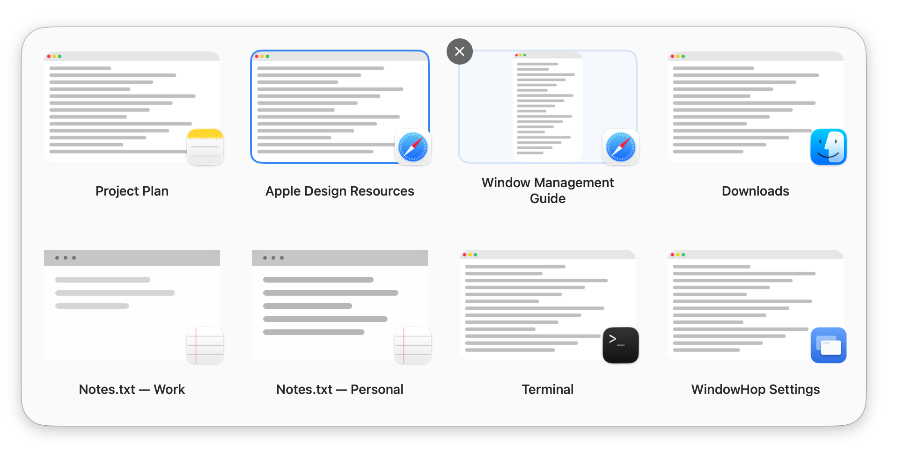
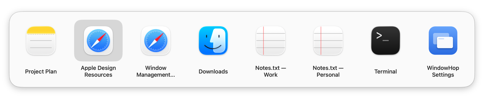
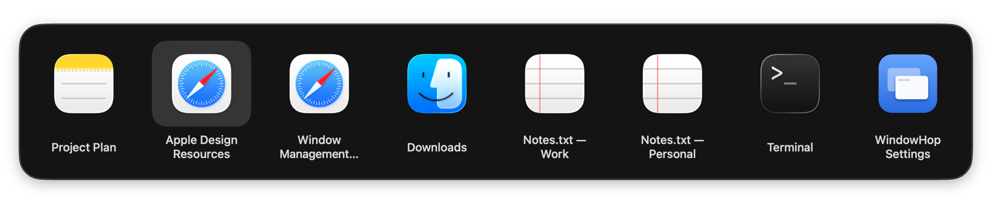
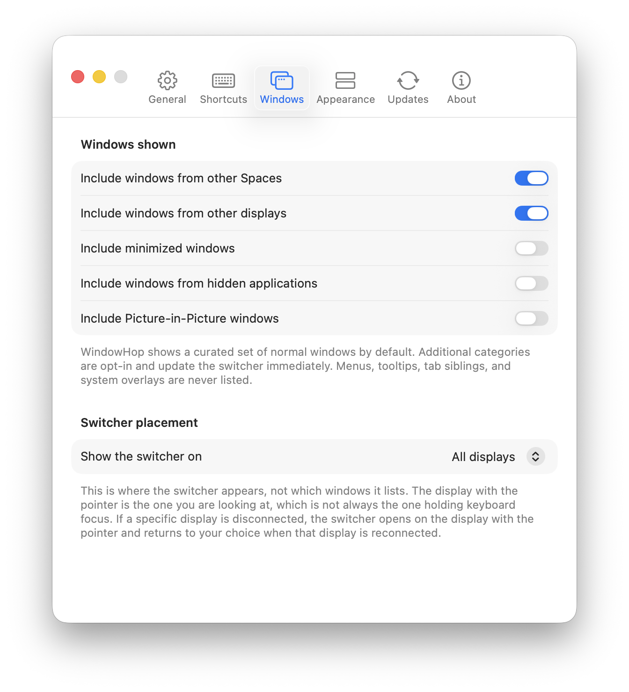

Keyboard-first
Cycle with ⌘Tab, open a persistent switcher with ⌥Tab, or choose your own shortcuts.
A native window switcher for macOS
See every top-level window, move with the keyboard, and land on the exact one you need.
Free and open source · macOS 26 or later · Apple Silicon

Window-level control
Command–Tab normally stops at the application. WindowHop gives each window its own place, with visual previews, native titles, and fast forward, reverse, and arrow-key navigation.


Made for the Mac
Cycle with ⌘Tab, open a persistent switcher with ⌥Tab, or choose your own shortcuts.
Recognize the window you need before switching. Previews stay on your Mac.
Include other Spaces, displays, minimized windows, hidden apps, or Picture-in-Picture when useful.
Follows your Mac’s Light or Dark appearance, with a clear highlight on the selected window.
General, Shortcuts, Windows, Appearance, Updates, and About panes — all one size — with one confirmed Restore Defaults action.
Pause to inspect a larger snapshot inside WindowHop without activating or raising the real window.
Your workflow
Normal windows across your visited Spaces and displays are included by default. Optional categories stay opt-in, tab counts stay out of the way, and every preference can return to its documented default.

Compared with AltTab
WindowHop is derived from AltTab, which already switches between windows well. WindowHop is the deliberately simpler answer: a fixed look, two appearance modes and few settings, for people who want window switching without a long settings screen. If AltTab already works for you, there is no reason to switch.
Both are free and open source under GPL-3.0.
Latest stable release
For macOS 26 or later on Apple Silicon Macs. Signed with Developer ID, notarized by Apple, and delivered as a disk image you drag to Applications.
Browse all releasesInstall
No account and no Terminal. WindowHop needs one permission, Accessibility, to see your windows and switch to them.
Choose Download WindowHop above. Your browser saves the WindowHop disk image, a file ending in .dmg, to your Downloads folder.
Double-click the file. A window opens showing WindowHop next to your Applications folder.
Drag WindowHop onto the Applications folder, then eject the disk image. Always open WindowHop from Applications, not from the disk image or Downloads.
Open it from Applications. macOS asks whether you want to open an app downloaded from the internet: choose Open. WindowHop is signed and notarized by Apple.
WindowHop shows a setup window. Choose Open System Settings, then turn on WindowHop under Privacy & Security → Accessibility.
Hold ⌘ and press Tab to see your windows. Press Tab again to move, and release ⌘ to switch.
App Icons, the default look, needs nothing else. If you turn on Window Previews in Settings → Appearance, WindowHop also asks for Screen Recording.
Help
That is WindowHop’s fail-safe: when WindowHop cannot answer, the Mac’s own switcher does. Check these in order:
Quit WindowHop: choose Quit WindowHop from its menu bar item, or press ⌘Q while its Settings window is in front. Then move WindowHop from Applications to the Trash.
To remove its permissions too, select WindowHop in System Settings → Privacy & Security → Accessibility, and in Screen Recording if you used Window Previews, and remove it with the minus button.
Open source
WindowHop is GPL-3.0 free software developed by Marton Paulo. It is derived from AltTab by Louis Pontoise (lwouis) and contributors, with gratitude and upstream attribution preserved.
No telemetry. No accounts. Update checks are WindowHop's only network activity.